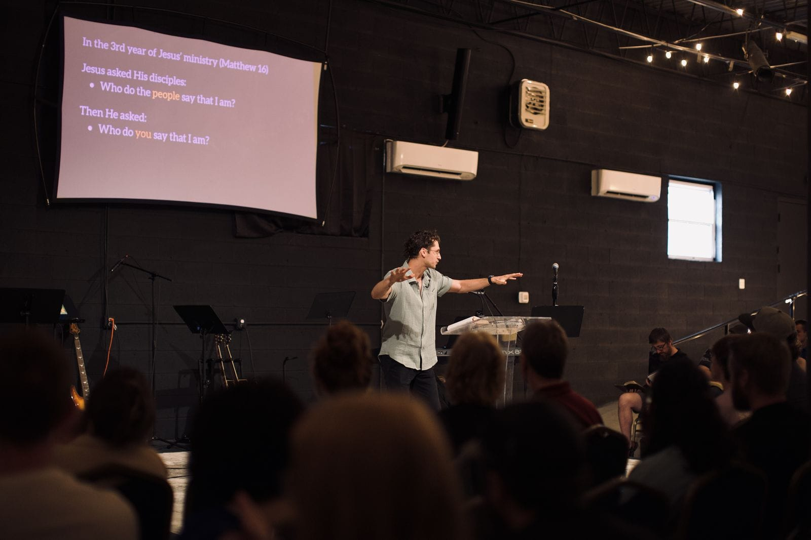

Watch Online
Messages to pause, reflect, and praise with.
Catch this week’s message or dig back into a past series — all in one place.
Catch this week’s message or dig back into a past series — all in one place.

New messages are added automatically from our YouTube channel once a day.
Watch on YouTubeThe last 12 messages. Filter by series, or head to YouTube for the full back catalogue.
Loading messages…
No messages in this series yet — check back soon, or .
Messages sync automatically from YouTube once a day — see PRODUCT.md / STEP-BY-STEP.md if this note is showing stale data or an error. A message picks up its series tag from the YouTube playlist it’s in; anything not in a playlist still appears here, tagged “Recent Messages”.